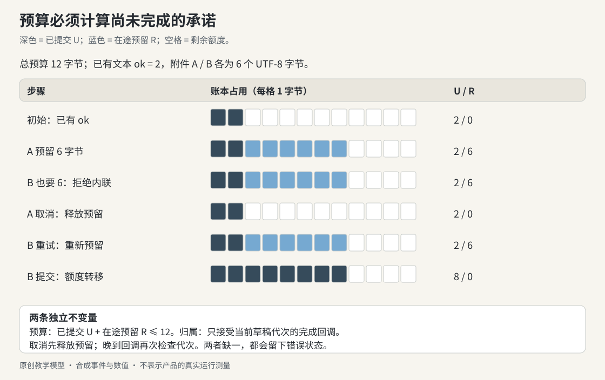

CLAUDE APP / RESEARCH LIBRARY
排版样章，完整书请运行构建器。
只收录附件预算案例与原图；其他本地引用保留为文字。正文直接来自书中的 Markdown。
实战推演：两个附件都说“还有空间”，为什么仍会超额？
输入框已有一份很短的内联文本。用户又粘贴一段中文，同时拖入一个可转成文本的文件。两个异步处理器几乎同时读取剩余额度；它们各自认为放得下，全部结束后却把消息撑过上限。稍后用户切换到新聊天，旧文件的解码结果又试图把附件卡加回来。
这段经历同时经过两种合同：预算决定能否进入，归属决定还能写到哪里。 只加上传进度条，或只在组件卸载时发 abort，都不能独立解决这两个问题。
本节把 5.4 的预留账本与 5.9 的草稿归属做成一个很小的原创实验。产品事实以 IP13、IP22、IP25–28 的原条件为准。为了能够手算，下面把总预算设为 12 字节；这不是产品限制，也不估算模型 token。
一、先算单位：这三种长度不是同一笔账
const bytes = value => new TextEncoder().encode(value).byteLength;
console.log('ok'.length, bytes('ok')); // 2, 2
console.log('资料'.length, bytes('资料')); // 2, 6
console.log('😀'.length, bytes('😀')); // 2, 4JavaScript 的 .length 在这里数 UTF-16 code units；TextEncoder 给出 UTF-8 字节。字符的视觉宽度、用户感知的字数和模型的 token 数还各有自己的规则。若账本用一种单位，准入判断用另一种，最后一次检查再严格也补不回此前错误的预留。
设已有文本为 ok，占 2 字节；附件 A 为 资料，附件 B 为 图像，各占 6 字节。天真的实现只读已完成列表：
A 读取：已用 2，新增 6，2 + 6 <= 12，通过。
B 读取：已用还是 2，新增 6，2 + 6 <= 12，也通过。
A 完成，然后 B 完成：2 + 6 + 6 = 14，超额。没有线程并行也会发生这种错误。浏览器在第一个任务的 await 之后可以处理第二个入口；共享数据没有预先记录 A 的承诺。
二、把“准备交付”也记入账本

图：深色块代表已提交数据，蓝色块代表在途预留。预算检查同时计算两者。取消释放预留；完成把同一份额度从预留转到已提交，不重复计数。
| 事件 | 已提交 U | 预留 R | 新需求 N | 判定与后续 |
|---|---|---|---|---|
初始已有 ok | 2 | 0 | 0 | 总量 2 |
| A 准备进入 | 2 | 0 | 6 | 2 + 0 + 6 ≤ 12，预留 A |
| B 准备进入 | 2 | 6 | 6 | 2 + 6 + 6 > 12，走文件或明确拒绝 |
| A 被取消 | 2 | 6 → 0 | 0 | 释放一次；再次清理不再扣除 |
| 重试 B | 2 | 0 → 6 | 6 | 新的一次准入成功 |
| B 完成 | 2 → 8 | 6 → 0 | 0 | 同一次同步状态转移，总量仍为 8 |
这个模型在拿到确定的清洁文本后才预留精确字节；它没有覆盖未知解码长度的估计。如果实现想在解码前预留，必须另定义保守上界，以及实际大小超过预留时的重新准入规则。
commit 的责任也应写清：它消费 pending token，并把对应字节记入 committed。release 只能消费仍 pending 的 token。两者共享一份 token 状态，完成之后再触发取消，不会把已经提交的数据从账本里凭空减掉。
三、用一个对象表达一次预留的完整寿命
完整实现见 context_budget.mjs。下面两个使用片段均以 04-Extracted-Core-Code-And-Scripts/worked-cases/ 为工作目录，保存为 .mjs 后用 Node 运行，或通过 node --input-type=module 从标准输入执行：
import { InlineBudget } from './context_budget.mjs';
const budget = new InlineBudget(12);
budget.reserve('existing', 'ok').commit();
const a = budget.reserve('a', '资料');
const b = budget.reserve('b', '图像');
console.assert(a !== null);
console.assert(b === null);
console.assert(budget.used === 2 && budget.reserved === 6);
a.release();
a.release(); // 重复清理无害
const retry = budget.reserve('b', '图像');
retry.commit();
console.assert(budget.used === 8 && budget.reserved === 0);预留失败返回的是“内联路线不能接纳”。它不意味着必须上传，也不意味着已取得上传许可。真实调用方还要检查文件能力、当前路线与发送归属；没有可用文件路线时应明确拒绝并保留用户输入。本实验只返回 file-or-reject，不伪造服务器文件引用。
在同一个 JavaScript realm 中，预留检查与写入 Map 必须放在没有 await 的同步段里。若多个 worker、标签页或服务实例共享额度，本地 Map 就不够了，还需要共享存储的原子操作或服务端仲裁。
四、预算正确，为什么附件仍会跑到新聊天？
预算只说明能否占用空间，不说明这份结果现在属于谁。给每份草稿一个 owner，再给它的工作周期一个 epoch：任务开始时捕获 epoch；完成时先检查是否仍匹配，然后才提交。
import { DraftOwner } from './context_budget.mjs';
const oldDraft = new DraftOwner('conversation-A/draft-1', 12);
const task = oldDraft.begin('a', '资料');
oldDraft.invalidate(); // 导航使在途结果失效，并释放本草稿的预留
const newDraft = new DraftOwner('conversation-B/draft-1', 12);
console.assert(task.complete() === false);
console.assert(oldDraft.budget.reserved === 0);
console.assert(newDraft.ready.size === 0);这里同时做了两件事。主动失效释放预留，避免一个永远不再回调的任务占着额度；晚到回调仍要检查 epoch，避免它绕过取消继续提交。AbortController 在真正接入读取或上传时也很有用，但“已发送取消信号”不是“不可能再收到回调”的证明。
这个 owner 是原创简化：它代表一份草稿，不处理已经交给发送队列持有的任务。原客户端有持有、等待接受和有效发送等更细的归属，不能把本例的 invalidate() 直接套成“每次卸载都取消全部附件”。
五、删除卡片、回收预览与删除文件是三条路径
| 资源 | 本例或实际应用中的所有者 | 何时可以释放 |
|---|---|---|
| 尚未提交的字节预留 | 当前任务 token | 失败、取消、失效；或者转为 committed |
| 已提交的内联附件 | 草稿/发送记录 | 明确移除或该记录生命周期结束 |
| object URL | 预览订阅者集合 | 最后一个使用者离开 |
| 服务器文件 | 远端记录及所有引用者 | 经过资源归属与删除条件判断 |
本模型的 invalidate() 保留已提交的旧草稿数据；创建新草稿也不会把它复制过去。budget.remove(id) 仅删除本地 committed 记账，不调用远端删除。这样的窄接口能让测试说清自己验证了什么。
六、把本卷接到已有实验，而不是另起一套术语
本例的 epoch 与第 2 卷的 spawn ticket、workspace-core 的 ContentEpoch解决相同的归属问题，但保护的对象不同：初始化、预览正文、附件草稿不能共用一个全局 generation。每个 owner 的新旧关系应只使自己的工作失效。
接入界面时，可沿前端工作台现有的 cancelTimer() generation 守卫继续读：状态实现。工作台只模拟回复，并未实现附件上传。练习目标是接上本实验的状态投影，而不是把那个 demo 误写成已具备完整文件管线。
七、练习与可检查的答案
在书根目录执行：
node 04-Extracted-Core-Code-And-Scripts/worked-cases/context_budget.mjs
node --test 04-Extracted-Core-Code-And-Scripts/worked-cases/context_budget.test.mjs先预测这些变化，再看测试结果：
- 把
资料换成两个 emoji，A 和 B 的准入会怎样变化？ - B 先完成再触发 cancel，能否把 used 从 8 减回 2？
- A 的解码 Promise 永远不返回，导航时额度会不会一直占用？
- 旧草稿已有完成附件，导航是否等于删除这些附件？
参考判断：两个常见 emoji 各占 4 个 UTF-8 字节，应按具体字符串实际编码后计算；本例两个 😀 为 8 字节。commit 后 cancel 不再消费 pending token，所以不减少 used。导航显式释放 pending，不依赖 Promise 再次回调。已经提交的数据仍属于旧草稿，是否持久化、何时删除，要由草稿/发送所有权另作决定。
11 个确定性测试分别覆盖单位、同时准入、边界相等、重复身份、重复释放、提交转移、取消后重试、换聊天、晚到回调和已提交数据保留。它们没有上传文件，没有复现 OCR，也没有测量模型上下文容量。